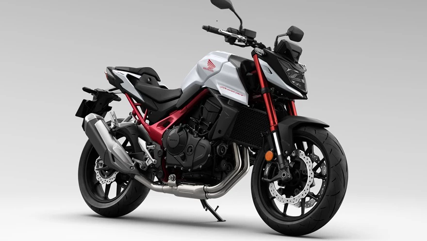

Bienvenidos a Kaizen Motos
Conoce la nueva Honda CB750 Hornet
La marca número uno en ventas de motos en el país, Honda, líder absolta con la Wave, una propuesta de acceso a la gama de baja cilindrada, presentó un nuevo modelo para posicionarse en otro segmento, esta vez, de 750 cc. Se trata de la nueva Honda CB750 Hornet, que ya se encuentra disponible en todos los concesionarios oficiales del país. Se trata de un modelo que se caracteriza por su deportividad basada en el diseño y la potencia.
